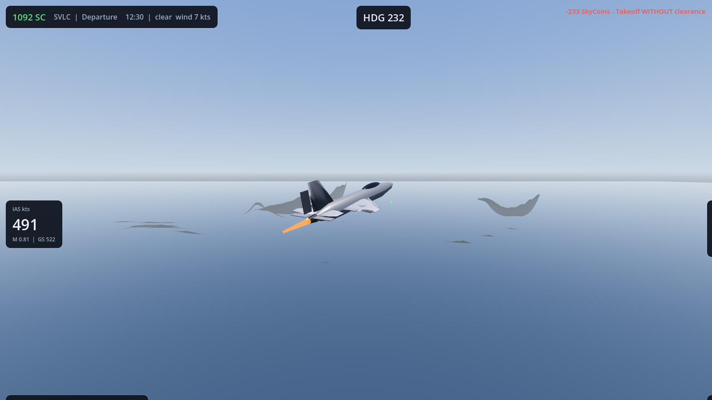
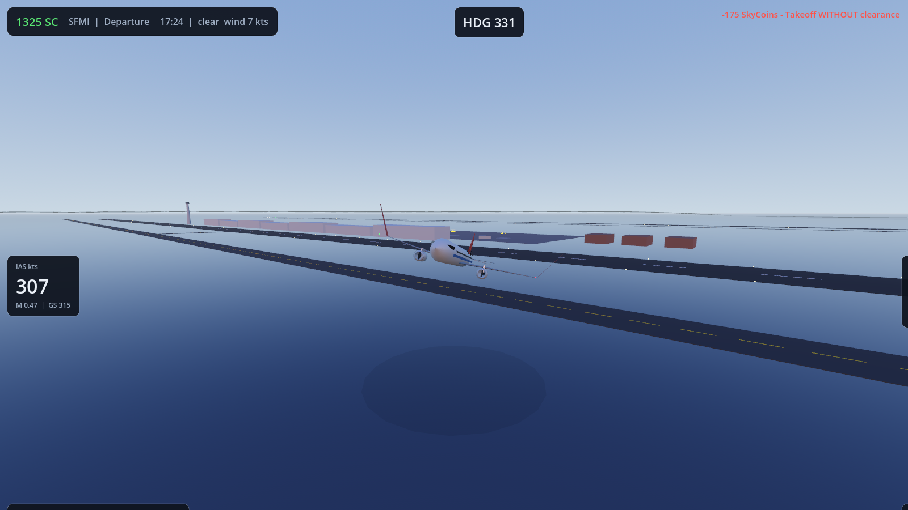
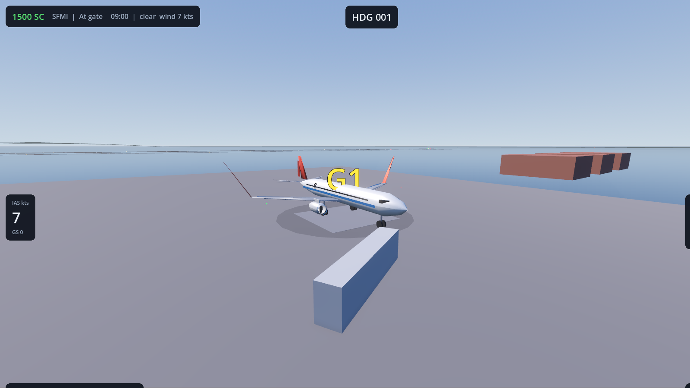
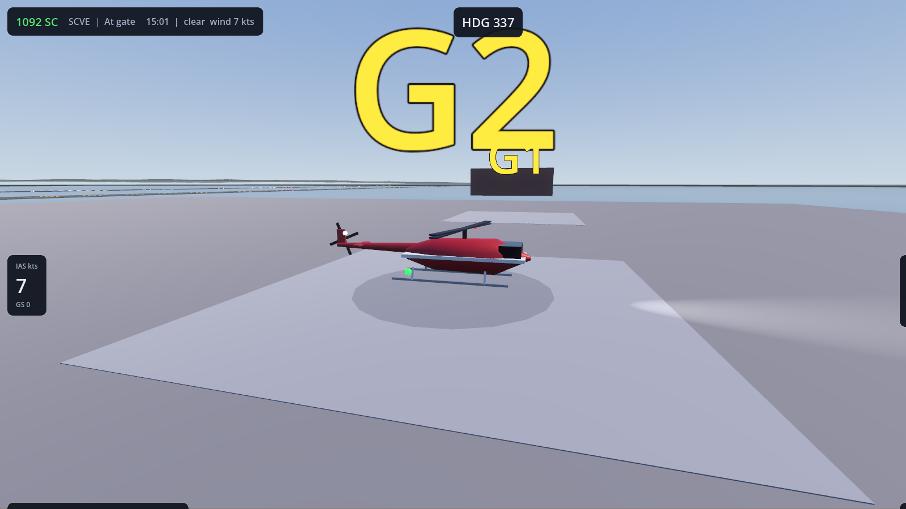

Real-scale flying over the Meridian Isles: 18 faithfully-specced aircraft, 10 airports, a living ATC, an economy that pays you to fly well — and bites when you don't.




Component-buildup aerodynamics: each wing panel, tail surface and fin sees its own airflow. Stalls, sideslip, ground effect, transonic drag, crosswinds and gusts all emerge from the math — the same physics on web and desktop.
Airframes wear with use and abuse. Over-G, overspeed, hard landings and afterburner abuse degrade systems — and the lower a system's health, the likelier an engine flameout, jammed flaps or stuck gear at the worst moment.
Clearance → taxi → hold short → takeoff → departure → enroute → approach → landing → taxi to a random gate. Into-wind runway assignment, taxi routing, go-arounds and emergency priority handling.
Judged every 15–30 seconds: clean flying, ATC compliance and butter landings pay; taxi speeding, runway incursions, gear-down cruising and crashes cost you. Fly jobs — cargo, charters, medical runs — to afford the heavy metal.
Ten airports 50–230 km apart, from a mega-hub to a desert strip, over procedural islands, mountains, deserts and snowfields with day/night and weather.
No servers, no accounts: one player hosts from the desktop app, friends join by IP. Shared world, real collisions, chat — fly formation or crop-dust your mate's approach.
Ailerons, elevators, rudders, Fowler flaps, slats, spoilers, retracting gear with bogies, spinning fans and rotors, afterburner glow, nav lights, beacons and strobes — all animated, all functional.
Start with the free Cessna 172 and 1,500 SkyCoins. Work your way up through airliners and fighters to the An-225 — every aircraft built to its real-world numbers.
I engines N parking brake W/S throttle arrows pitch & roll A/D rudder G gear F/V flaps B brakes Tab ATC J jobs M map C camera X autopilot F1 help
Request clearance on Tab, taxi the yellow lines, hold short, and when the tower clears you — full power, rotate, gear up. The PAPI lights beside the runway will bring you home: two white, two red, you're on the glide.